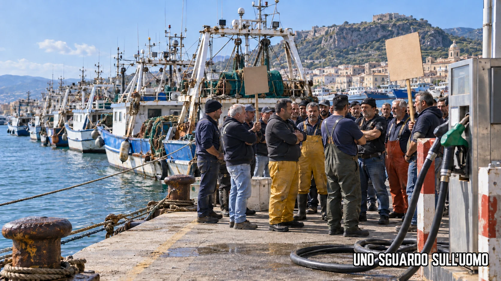
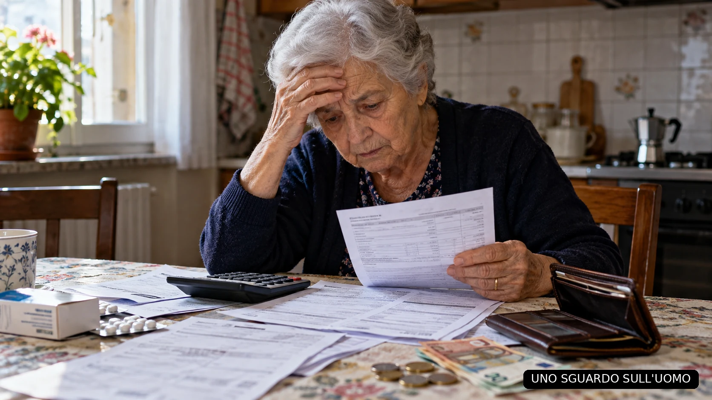
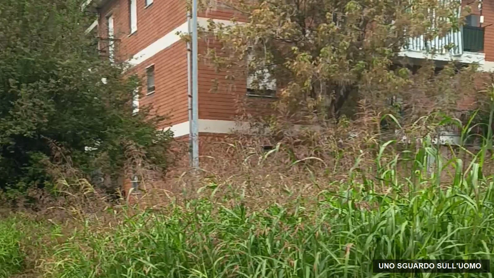

Politica italiana • Minori • Responsabilità
Nessuno è responsabile
Minori, genitori e adulti che li influenzano: dopo gli scontri la responsabilità rimbalza fino a non appartenere più a nessuno.
Leggi il dossier →
Politica italiana • Minori • Responsabilità
Minori, genitori e adulti che li influenzano: dopo gli scontri la responsabilità rimbalza fino a non appartenere più a nessuno.
Leggi il dossier →
Politica italiana • Campo largo • Primarie
L'investitura di Elly Schlein e la sfida di Giuseppe Conte trasformano le primarie del campo largo in una prova di forza dagli effetti asimmetrici sul Partito Democratico e sul Movimento 5 Stelle.
Leggi il dossier →Politica italiana • Studenti • Ordine pubblico
Il 17 ottobre mostra come la pressione politica sui giovani di sinistra possa trasformare una minoranza organizzata in un'arma senza controllo.
Leggi il dossier →Politica internazionale • Artico • Italia
Russia e Cina costruiscono la rotta artica, la NATO ne prepara la sicurezza e l'Italia organizza porti, ferrovie e industria per il nuovo ordine mondiale.
Leggi il dossier →Politica internazionale • Russia • Stati Uniti
Quarant'anni di incroci tra Trump e Putin conducono all'accordo sul diesel e alle conseguenze possibili per Ucraina, Europa, Italia e mercati.
Leggi il dossier →Politica internazionale • Russia • Ucraina
L’accordo Trump-Putin sul diesel russo collega prezzi, guerra in Ucraina e autonomia europea: chi negozia la pace e chi ne paga il costo.
Leggi il dossier →
Economia • Pesca • Caro gasolio
Caro gasolio, aiuti pubblici e prezzi del pesce: i pescherecci protestano mentre famiglie ed equipaggi sostengono il costo della crisi.
Leggi il dossier →Economia · Fisco e società
Nel 1973 l’IVA entrò in una società con meno istruzione, informazione limitata e consumi ancora legati all’autoproduzione. Nel 2002 l’euro produsse un disorientamento diverso ma simile.
Leggi il dossier →Economia • Energia e carburanti • Eni
Eni, controllo pubblico e price cap sui carburanti: cronologia 22-25-26 settembre, ruolo del Governo e vertice Claudio Descalzi.
Leggi il dossier →
Società • Pensioni • Povertà
La povertà degli anziani si estende alle famiglie: pensioni insufficienti, aiuti informali e 515 milioni di trattenute sindacali nel 2025.
Leggi il dossier →
Società • Edilizia pubblica • Manutenzione
Via Kennedy, Carate Brianza: ascensore fermo, pulizie irregolari, manutenzioni e mezzi inutilizzati. Il dossier sui tempi e sulle responsabilità di ALER.
Leggi il dossier →Società • Sanità • Liste d’attesa
Liste d’attesa, prescrizioni senza prestazione e crescita della solvenza: come il mancato accesso sposta costi e rischi sanitari sulle famiglie.
Leggi il dossier →